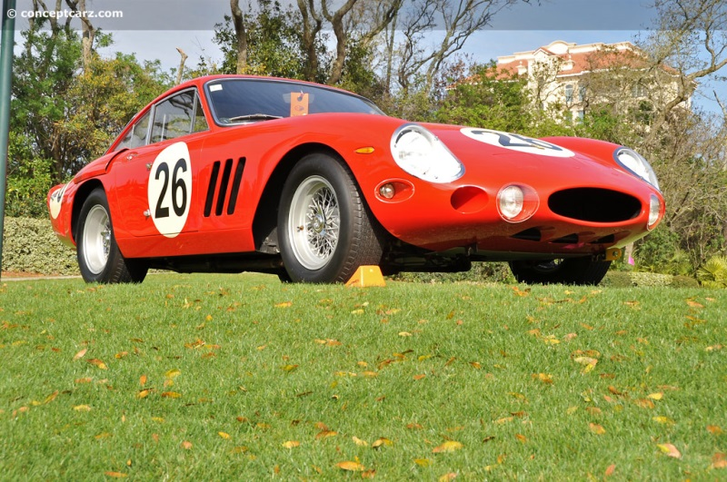
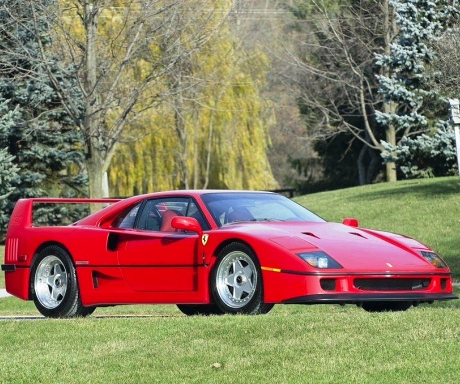
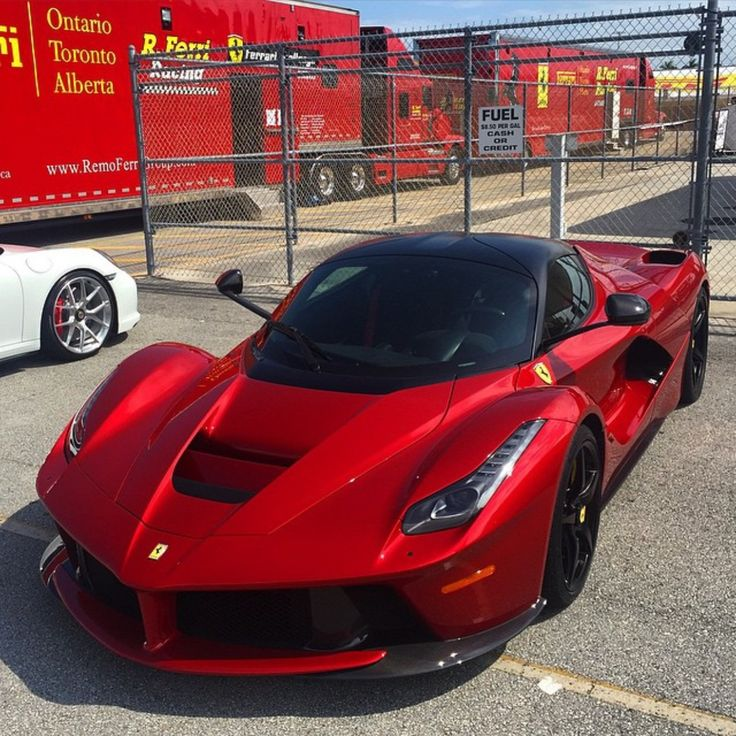
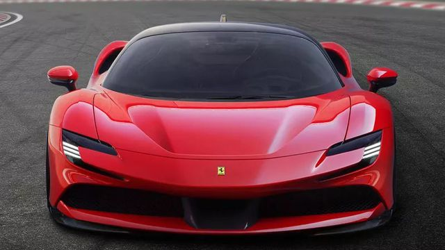

Scuderia Ferrari: A Paixão e a Tradição do Cavallino Rampante
Fundação: 1939 | Origem: Maranello, Itália
A história da Ferrari confunde-se com a própria história do automobilismo mundial. Fundada por Enzo Ferrari, a marca nasceu com um único objetivo: financiar as atividades de sua equipe de corridas. A transição para os carros de rua ocorreu para manter a fábrica e levar a tecnologia das pistas diretamente para as estradas.
1. O Início: O Primeiro Carro (125 S)
Lançado em 1947, o Ferrari 125 S foi o primeiro automóvel a carregar o nome de Enzo Ferrari. Mesmo sendo o primeiro modelo fabricado, ele já vinha equipado com um motor V12 de 1.5 litro, projetado por Gioachino Colombo.
Curiosidade Técnica: O lendário V12 Colombo
O projetista Gioachino Colombo desenvolveu um motor V12 incrivelmente compacto para o 125 S. Essa arquitetura de bloco V12 "Colombo" foi tão bem-sucedida que evoluiu e impulsionou os principais carros de corrida e GTs da Ferrari pelas décadas de 50 e 60.

Vídeo demonstrativo da Ferrari 125 S:
2. O Divisor de Águas: 250 GTO e F40
Nos anos 1960, a Ferrari 250 GTO dominou as pistas e tornou-se um dos carros mais valiosos da história. Nas décadas seguintes, a marca respondeu à concorrência adotando a configuração de motor central-traseiro com a linha Berlinetta Boxer e os motores V8 Biturbo da 288 GTO. Essa evolução culminou, em 1987, na purista e lendária Ferrari F40, construída em fibra de carbono e kevlar para celebrar os 40 anos da empresa.
O Hiato Histórico: A Guerra de Le Mans e os Motores Centrais
Entre a 250 GTO e a F40, a Ferrari viveu momentos marcantes: enfrentou a Ford nas 24 Horas de Le Mans nos anos 60, migrou seus motores da frente para a posição central-traseira com a linha Dino e a 512 BB nos anos 70, e introduziu a sobrealimentação por turbo com a 288 GTO em 1984 — modelo que serviu de base direta para a criação da F40.


Curiosidade Histórica: O Último Selo de Enzo Ferrari
A Ferrari F40 foi o último supercarro aprovado pessoalmente por Enzo Ferrari antes de sua morte em 1988. Com 478 cv vindo de um V8 2.9 Biturbo e sem assistências eletrônicas, ela é considerada a expressão máxima da dirigibilidade purista.
3. A Era Moderna: Da LaFerrari aos Dias Atuais
No século XXI, a Ferrari continuou na vanguarda do desempenho, unindo sua tradição de motores aspirados com tecnologias derivadas diretamente de seus carros da Fórmula 1.
3.1. O Marco Híbrido: LaFerrari (e a Sucessão da Enzo)
Lançada em 2002 para homenagear o fundador da marca, a Ferrari Enzo trouxe para as ruas a aerodinâmica e a mecânica V12 purista de 660 cv derivadas diretamente da era de ouro da Scuderia na Fórmula 1.
Uma década depois, em 2013, a LaFerrari sucedeu a Enzo e representou um salto tecnológico ao adotar o sistema HY-KERS, combinando um motor V12 de 6.3 litros a um motor elétrico para entregar impressionantes 963 cv.


Ouça o Motor V12 da LaFerrari (6.3L Aspirado):
3.2. Os Dias Atuais: A Revolução Plug-in com a SF90 Stradale
Comemorando os 90 anos de fundação da Scuderia Ferrari, a SF90 Stradale (2019) estabeleceu um novo capítulo na história de Maranello ao tornar-se o primeiro supercarro híbrido plug-in (PHEV) de produção em série da fabricante.
Diferente dos modelos da linhagem V12 tradicional, a SF90 une um motor **V8 4.0 Biturbo de 780 cv** a **três motores elétricos** (dois no eixo dianteiro e um no traseiro), entregando uma potência combinada de **1.000 cv**. Além de ser a primeira Ferrari com tração integral (*AWD*) em um supercarro de motor central, ela é capaz de rodar pequenos trajetos em modo 100% elétrico e silencioso.

Curiosidade: O significado de "SF90 Stradale"
A sigla SF90 faz referência direta aos 90 anos da Scuderia Ferrari (1929–2019), enquanto a palavra Stradale ("estrada" em italiano) reforça que, apesar de trazer tecnologias e aceleração de nível de Fórmula 1 (0 a 100 km/h em apenas 2,5 segundos), o carro foi homologado para uso diário nas ruas.